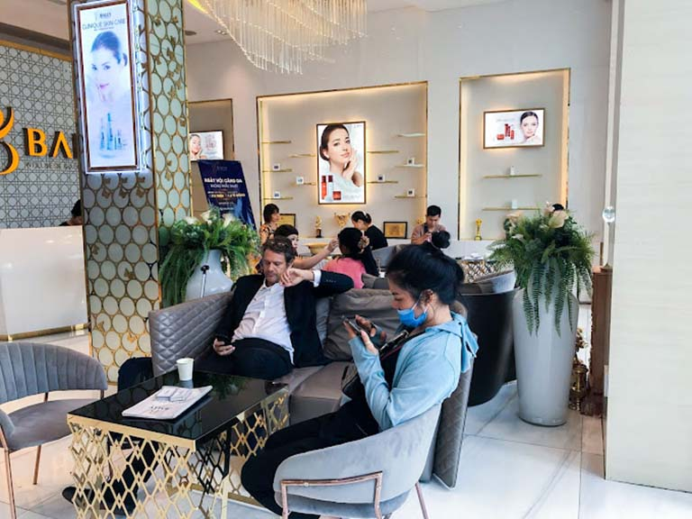
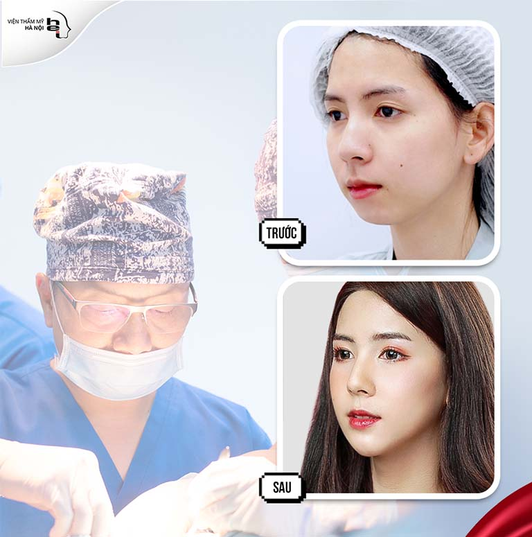
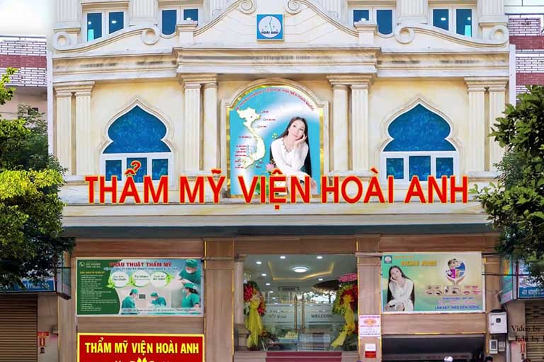
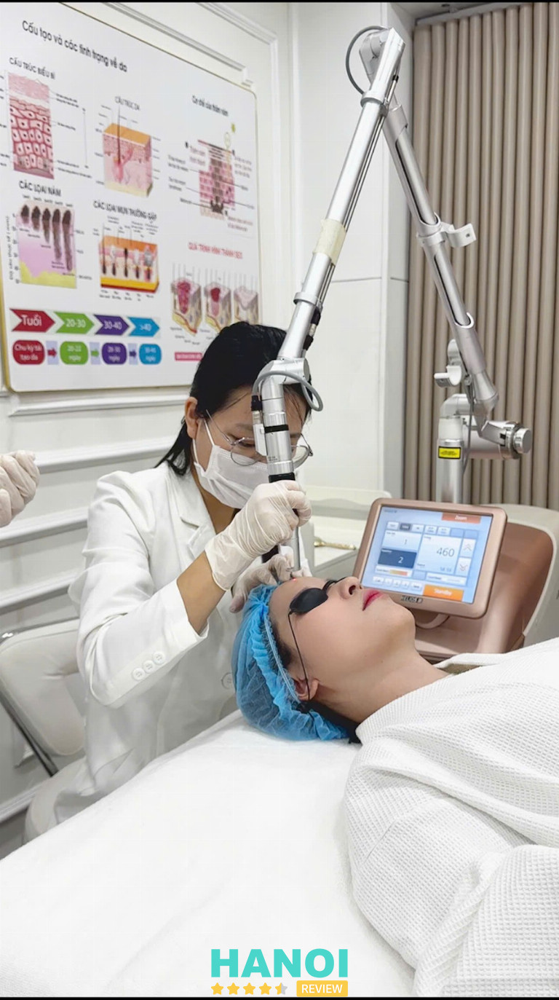
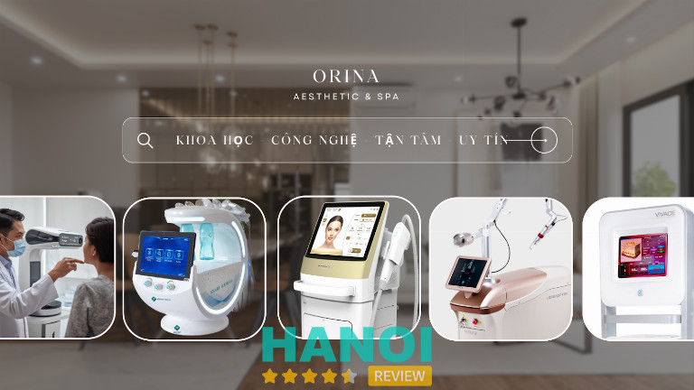
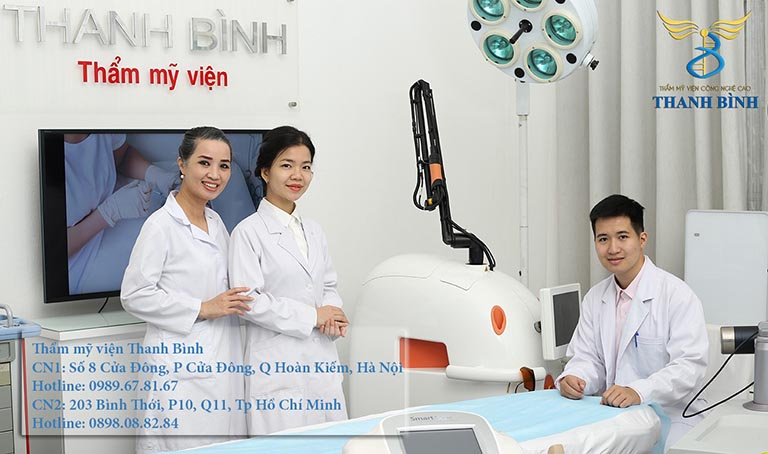
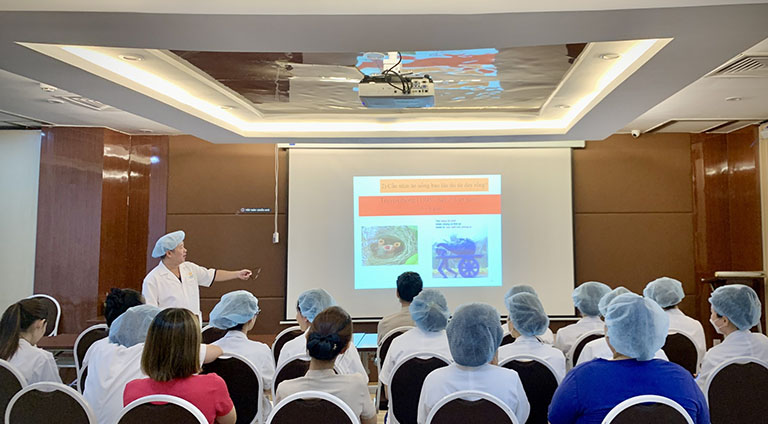
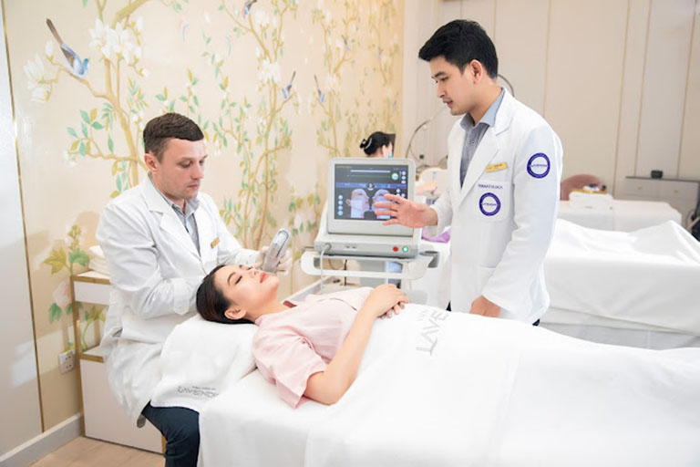
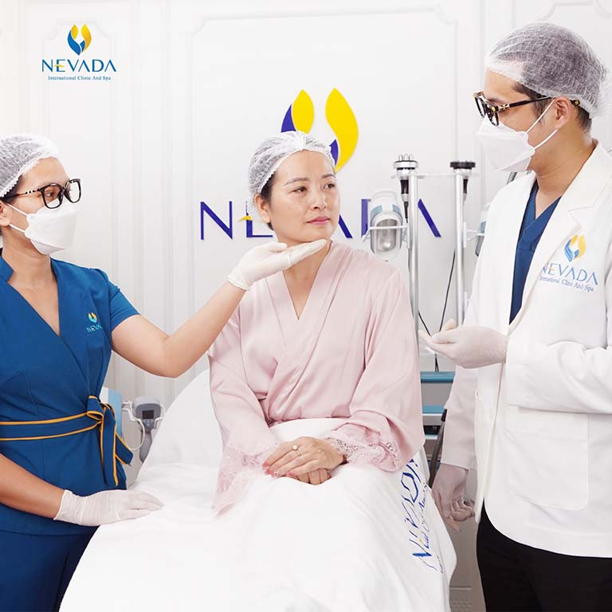
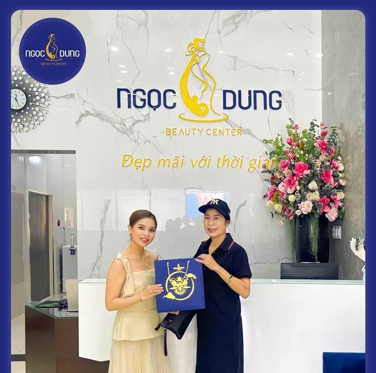

12 Thẩm mỹ viện tại Hà Nội uy tín, dịch vụ tốt, bác sĩ mát tay
Bạn đang tìm kiếm một địa chỉ uy tín để làm đẹp? Đừng bỏ lỡ danh sách 12 thẩm mỹ viện hàng đầu mà HaNoiReview giới thiệu dưới đây – nơi bạn có thể tin tưởng vào dịch vụ chất lượng cùng đội ngũ bác sĩ mát tay.
Như đã biết, Hà Nội không chỉ nổi tiếng với những di sản văn hóa mà trong đó có ngành thẩm mỹ. Với sự phát triển không ngừng của ngành công nghiệp thẩm mỹ, nhu cầu làm đẹp của người dân ngày càng tăng cao, dẫn đến sự mọc lên của nhiều thẩm mỹ viện tại Hà Nội.
Top 12 Thẩm mỹ viện ở Hà Nội hiện đại, giá tốt
Thông qua bài viết này, HaNoiReview sẽ giới thiệu cho bạn danh sách 11 thẩm mỹ viện hàng đầu ở khu vực. Những địa chỉ này không chỉ được khách hàng đánh giá cao về chất lượng dịch vụ mà còn nổi bật với đội ngũ bác sĩ “mát tay”, giúp bạn có những trải nghiệm thẩm mỹ an toàn, hiệu quả.
Thẩm mỹ viện quốc tế Bally
Thẩm mỹ hiện đại không chỉ là nghệ thuật mà còn là sự kết hợp hoàn hảo của công nghệ cùng các kỹ thuật tiên tiến. Trong bối cảnh thẩm mỹ viện tại Hà Nội mọc lên như nấm sau mưa, Thẩm mỹ viện quốc tế Bally đã nhanh chóng chiếm lĩnh lòng tin của khách hàng nhờ vào dịch vụ chất lượng và không gian sang trọng.
Bước chân vào Thẩm mỹ viện quốc tế Bally, bạn sẽ cảm nhận ngay sự tinh tế, sang trọng theo phong cách thiết kế Châu Âu. Mỗi chi tiết, từ nội thất, trang trí đến ánh sáng, đều thể hiện sự chăm chút cho khách hàng, tạo nên một không gian tinh tế.

Đặc biệt, Thẩm mỹ viện Bally tự hào với danh sách dịch vụ đa dạng, bao gồm:
- Giảm béo bụng bằng công nghệ Liposonix
- Nâng cơ, trẻ hóa da bằng công nghệ Thermage
- Săn chắc da bằng công nghệ Exilis
- Hỗ trợ điều trị nám, tàn nhang
- Hỗ trợ điều trị mụn trứng cá
Tất cả các dịch vụ trên đều được thực hiện bằng hệ thống máy móc nhập khẩu từ các nước quốc tế nổi tiếng về làm đẹp như Mỹ, Italy, Pháp, Canada, Hàn Quốc, Thái Lan, Nhật Bản…
Chất lượng dịch vụ không chỉ dừng lại ở công nghệ. Thẩm mỹ viện quốc tế Bally quy tụ đội ngũ nhân sự giỏi bao gồm các y bác sĩ, kỹ thuật viên, chuyên viên thẩm mỹ được chọn lọc cũng như đào tạo bài bản. Sự tận tâm, chuyên nghiệp kết hợp với tay nghề cao của các bác sĩ đảm bảo rằng mỗi lần khách hàng đến là một trải nghiệm làm đẹp hoàn hảo.
Khách hàng khi đến đây còn có cơ hội trải nghiệm nhiều chương trình ưu đãi hấp dẫn. Điều này không chỉ giúp tiết kiệm chi phí mà còn tận hưởng dịch vụ chất lượng cao. Thẩm mỹ viện Bally luôn ứng dụng các công nghệ hàng đầu cũng như không ngừng cập nhật để mang đến các phương pháp làm đẹp hiệu quả nhất cho mọi đối tượng khách hàng.
Đối với những ai đang tìm kiếm một địa chỉ thẩm mỹ viện tại Hà Nội chất lượng, chuyên nghiệp, Thẩm mỹ viện quốc tế Bally là lựa chọn không thể bỏ qua. Từ không gian, dịch vụ, đến đội ngũ chuyên nghiệp, tất cả đều thể hiện sự tận tâm, chuyên nghiệp.
Thông tin liên hệ:
- Địa chỉ: 463 P. Kim Mã, P. Ngọc Khánh, Q. Ba Đình, TP. Hà Nội
- Điện thoại: 0386 463 463
- Website: thammyquoctebally.com
- Facebook: FB.com/ThammyquocteBallyHanoi
Saigon Smile Medical
Với hơn 20 năm kinh nghiệm trong lĩnh vực làm đẹp, Saigon Smile Medical – thương hiệu số 1 về giảm béo và trẻ hóa da chuẩn y khoa Hoa Kỳ đã khẳng định vị thế tiên phong trong việc ứng dụng công nghệ thẩm mỹ không xâm lấn. Đây là địa chỉ tin cậy dành cho phái đẹp mong muốn giữ gìn vóc dáng, trẻ hóa làn da và duy trì phong thái tự tin, sang trọng.
Ngay từ khi bước vào Saigon Smile Medical, khách hàng sẽ cảm nhận không gian chuẩn 5 sao với phong cách thiết kế tinh tế, hiện đại, mang lại cảm giác thư giãn tuyệt đối.
Thế mạnh dịch vụ tại Saigon Smile Medical gồm:
- Giảm béo chuẩn y khoa: Công nghệ giảm béo ứng dụng trí tuệ nhân tạo AI không phẫu thuật hàng đầu thế giới giúp loại bỏ mỡ thừa trúng đích, an toàn, hiệu quả lâu dài.
- Trẻ hóa da: Công nghệ Thermage FLX, Ultherapy Prime, Linear Z, Laser… mang lại làn da săn chắc, mịn màng và ngăn ngừa lão hóa.
Đội ngũ bác sĩ tại Saigon Smile Medical được đào tạo bài bản, có chứng chỉ quốc tế, cùng chuyên viên thẩm mỹ giàu kinh nghiệm, luôn tận tâm đồng hành cùng khách hàng trong hành trình giữ gìn sắc đẹp và sức khỏe. Liệu trình làm đẹp cá nhân hóa, xây dựng riêng cho từng khách hàng, dựa trên phân tích y khoa và chỉ số cơ thể.
Không chỉ mang đến kết quả thẩm mỹ an toàn, hiệu quả, Saigon Smile Medical còn chú trọng dịch vụ chăm sóc hậu kỳ, theo dõi sát sao từng khách hàng để đảm bảo kết quả duy trì bền vững.
Thông tin liên hệ:
- Chi nhánh 1: 17T9 Nguyễn Thị Thập, P. Yên Hòa, Hà Nội
- Chi nhánh 2: 7C Hàm Long, P. Cửa Nam, Hà Nội
- Chi nhánh 3: P2 Ciputra, P. Phú Thượng, Hà Nội
- Chi nhánh 4: 272 Nguyễn Thiện Thuật, P. Bàn Cờ, TP. Hồ Chí Minh
- Chi nhánh 5: 142B Nguyễn Văn Trỗi, P. Phú Nhuận, TP. Hồ Chí Minh
- Hotline: 19001299
- Website: saigonsmile.com.vn
- Facebook: fb.com/Saigonsmilemedical
Viện thẩm mỹ Hà Nội
Trong sự đa dạng của lĩnh vực thẩm mỹ viện tại Hà Nội, Viện thẩm mỹ Hà Nội đã và đang khẳng định mình là một trong những địa chỉ đáng tin cậy nhất. Với hơn 15 năm kinh nghiệm trong ngành, viện không chỉ mang đến sắc đẹp cho hàng ngàn khách hàng mà còn góp phần nâng cao chất lượng dịch vụ thẩm mỹ trong khu vực Thủ Đô.
Dưới sự điều hành và chịu trách nhiệm chuyên môn của Thạc sĩ, Bác sĩ Mai Mạnh Tuấn – người có hơn 25 năm gắn bó với ngành nghề, sở hữu phương pháp phẫu thuật không khâu da độc quyền, Viện thẩm mỹ Hà Nội luôn nắm bắt, áp dụng các tiến bộ, công nghệ tiên tiến nhất. Đội ngũ bác sĩ, chuyên viên và nhân viên được tổ chức đào tạo chuyên nghiệp qua nhiều khóa, mang lại những kết quả tốt nhất cho khách hàng.

Viện thẩm mỹ Hà Nội nổi bật với các mảng dịch vụ chính có thể kể đến như:
- Phẫu thuật thẩm mỹ nâng ngực
- Tạo hình thành bụng
- Nâng mũi
Những dịch vụ này đều tuân theo quy trình thẩm mỹ chuẩn của Bộ Y tế, đảm bảo an toàn, hiệu quả cho mỗi khách hàng. Đặc biệt, với sứ mệnh “Nâng tầm sắc đẹp”, viện không chỉ dừng lại ở việc cung cấp dịch vụ chất lượng mà còn tập trung vào việc tạo nên trải nghiệm hoàn hảo, làm hài lòng cả những khách hàng khó tính nhất.
Từng bước đi vững chắc, Viện thẩm mỹ Hà Nội không chỉ khẳng định vị thế của mình trong lòng khách hàng mà còn góp phần đưa thẩm mỹ viện tại Hà Nội lên một tầm cao mới. Với sự dẫn dắt của Bác sĩ Mai Mạnh Tuấn cùng đội ngũ chuyên gia giỏi và lành nghề, Viện thẩm mỹ Hà Nội chắc chắn sẽ là lựa chọn hàng đầu cho những ai mong muốn biến ước mơ sở hữu vẻ đẹp hoàn mỹ trở thành hiện thực.
Thông tin liên hệ:
- Địa chỉ: 14 Đường Yên Phụ, Quận Ba Đình, TP. Hà Nội
- Điện thoại: 024 3945 4548
- Website: vienthammyhanoi.com.vn
- Facebook: FB.com/BenhVienThamMyHaNoi
GỢI Ý: 10 Địa chỉ tiêm Filler tại Hà Nội đẹp, an toàn, chất lượng
Thẩm mỹ viện Hoài Anh
Tại Hà Nội, có không ít các cơ sở làm đẹp chất lượng tiên phong với những công nghệ, kỹ thuật hàng đầu. Vậy bạn đã bao giờ nghe đến cái tên Thẩm mỹ viện Hoài Anh. Đây là một trong các thẩm mỹ viện tại Hà Nội chất lượng cao mà bạn không thể bỏ lỡ mỗi khi có nhu cầu làm đẹp, “ tân trang” sắc vóc.
Thành lập từ năm 2000, đi đầu trong các phương pháp phun xăm thẩm mỹ tiên tiến, Thẩm mỹ viện Hoài Anh đã mang đến những công nghệ làm đẹp hiệu quả cho khách hàng nước ta mà không cần dùng đến giao kéo.
Mỗi khách hàng đều có những đường nét duyên dáng riêng biệt, chính vì thế, Thẩm mỹ viện Hoài Anh sẽ thực hiện xem xét, thăm khám kỹ lưỡng để tạo nên những nhan sắc hài hòa, ưng ý nhất. Điều này giúp chị em phụ nữ cũng như các đối tượng có nhu cầu làm đẹp có thể an tâm sở hữu các dịch vụ thẩm mỹ an toàn, hiệu quả mà không lo mất đi nét đẹp riêng sẵn có.

Đội ngũ nhân sự tại Thẩm mỹ viện Hoài Anh cũng góp phần tạo nên một điểm cộng lớn cho các dịch vụ đang cung cấp tại đây. Từng thành viên đều được tuyển chọn theo các tiêu chí khắt khe và đào tạo bài bản để không ngừng cập nhật các công nghệ, kỹ thuật làm đẹp mới và hiện đại hàng đầu ở trong nước cũng như quốc tế.
Để không ngừng phát triển mạnh mẽ trên thị trường thẩm mỹ nói chung và phun xăm thẩm mỹ nói riêng. Nơi đây đã và đang liên tục nghiên cứu, sáng tạo ra các kỹ thuật phun xăm, màu phun xăm mới từ các nguồn gốc an toàn, lành tính, nhằm mang đến sự mới lạ cho công nghệ làm đẹp này.
Về giá cả, Thẩm mỹ viện Hoài Anh cam kết giữ mức giá bình ổn cho các dịch vụ. Sự tinh tế còn thể hiện ở việc Thẩm mỹ viện Hoài Anh chia các dịch vụ thành nhiều phân khúc giá khác nhau để mọi đối tượng khách hàng đều có thể dễ dàng lựa chọn được các phương pháp phù hợp với nhu cầu tài chính.
Thông tin liên hệ:
- Địa chỉ: 201 Phố Chùa Láng, P. Láng Thượng, Q. Đống Đa, TP. Hà Nội
- Điện thoại: 024 3773 3479
- Website: thammyhoaianh.com.vn
- Facebook: FB.com/ThammyvienHoaiAnh
Orina Aesthetic & Spa
Với sự phát triển mạnh mẽ của ngành thẩm mỹ hiện nay, việc lựa chọn một địa chỉ làm đẹp uy tín và chất lượng luôn là mối quan tâm hàng đầu của phái đẹp. Orina Aesthetic & Spa tại Hà Nội, với phương châm “Chăm sóc sắc đẹp an toàn, hiệu quả”, đã và đang chiếm trọn niềm tin của khách hàng nhờ vào chất lượng dịch vụ vượt trội và đội ngũ chuyên gia tận tâm.
Chuyên gia thẩm mỹ giàu kinh nghiệm
Orina Aesthetic & Spa tự hào sở hữu đội ngũ bác sĩ chuyên khoa da liễu 10 năm kinh nghiệm. Mỗi khách hàng đến với Orina đều được tư vấn kỹ lưỡng, phân tích tình trạng da và đưa ra liệu trình điều trị phù hợp nhất, đảm bảo an toàn và hiệu quả tối ưu. Sự am hiểu về từng loại da và các vấn đề thẩm mỹ cụ thể của các chuyên gia tại Orina chính là điểm mạnh giúp khách hàng cảm thấy an tâm khi lựa chọn dịch vụ.

Công nghệ tiên tiến, dịch vụ đa dạng
Orina Aesthetic & Spa không ngừng cập nhật các công nghệ làm đẹp tiên tiến nhất để mang lại những kết quả hoàn hảo cho khách hàng. Các liệu trình làm đẹp tại Orina sử dụng các thiết bị hiện đại, được nhập khẩu từ các quốc gia có nền công nghệ thẩm mỹ hàng đầu như Hàn Quốc, Nhật Bản. Trong đó, các dịch vụ nổi bật phải kể đến:
- Chăm sóc da chuyên sâu: Các liệu trình trị liệu như trẻ hóa da, chống lão hóa, làm trắng sáng da được thực hiện với công nghệ tiên tiến như HIFU, Nano Peptide, giúp phục hồi làn da hư tổn, xóa mờ nếp nhăn, làm da săn chắc và mịn màng.
- Trị liệu mụn, nám, tàn nhang: Các phương pháp điều trị mụn, nám, tàn nhang tại Orina sử dụng các công nghệ tiên tiến, an toàn cho da, không gây đau rát hay tổn thương da, mang lại làn da sáng khỏe, đều màu.
- Nâng cơ, tạo hình khuôn mặt: Orina áp dụng công nghệ nâng cơ không phẫu thuật như HIFU LINEAR Z, giúp làm căng da, trẻ hóa khuôn mặt mà không cần dùng đến dao kéo.
Không gian và dịch vụ cao cấp
Không chỉ chú trọng đến chất lượng dịch vụ, Orina Aesthetic & Spa còn đặc biệt quan tâm đến không gian làm đẹp. Với thiết kế hiện đại, sang trọng và thoải mái, Orina mang đến một trải nghiệm thư giãn tuyệt vời cho khách hàng. Mỗi phòng trị liệu đều được trang bị đầy đủ thiết bị hiện đại và được vệ sinh sạch sẽ, đảm bảo sự an toàn và thoải mái trong suốt quá trình làm đẹp.
Bên cạnh đó, thái độ phục vụ tận tâm của đội ngũ nhân viên tại Orina cũng là điểm cộng lớn. Từ nhân viên lễ tân đến các chuyên viên kỹ thuật đều nhiệt tình, chu đáo và luôn sẵn sàng lắng nghe, giải đáp mọi thắc mắc của khách hàng.
Lý do chọn Orina Aesthetic & Spa
- Uy tín và chất lượng: Orina Aesthetic & Spa là một trong những thẩm mỹ viện tại Hà Nội được nhiều khách hàng tin tưởng lựa chọn nhờ vào cam kết chất lượng và hiệu quả lâu dài.
- Công nghệ hiện đại: Sử dụng các công nghệ tiên tiến trong điều trị và chăm sóc sắc đẹp, Orina luôn mang lại kết quả vượt trội cho khách hàng.
- Dịch vụ chuyên nghiệp: Mỗi khách hàng đều được chăm sóc tận tình và tư vấn kỹ lưỡng, với liệu trình được thiết kế riêng biệt, phù hợp với nhu cầu và tình trạng da.
- Không gian sang trọng, hiện đại: Môi trường làm đẹp tại Orina mang đến cảm giác thư giãn và thoải mái, giúp khách hàng có thể tận hưởng những giây phút chăm sóc sắc đẹp tuyệt vời.
- Đội ngũ bác sĩ chuyên khoa da liễu 10 năm kinh nghiệm: Các bác sĩ vừa giỏi chuyên môn, vừa giàu kinh nghiệm, trực tiếp thực hiên khám, soi da và làm các liệu trình công nghệ cao cho khách hàng.

Cam kết an toàn và hiệu quả
Orina Aesthetic & Spa cam kết mọi liệu trình đều được thực hiện đúng quy trình, an toàn tuyệt đối với sức khỏe của khách hàng. Các sản phẩm sử dụng tại Orina đều được kiểm định chất lượng và có nguồn gốc rõ ràng. Chính vì vậy, bạn có thể hoàn toàn yên tâm khi lựa chọn Orina là địa chỉ làm đẹp của mình.
Orina Aesthetic & Spa luôn là một trong những địa chỉ được yêu thích tại Hà Nội, là nơi không chỉ giúp bạn làm đẹp mà còn mang lại sự tự tin, tươi mới cho cuộc sống. Nếu bạn đang tìm kiếm một thẩm mỹ viện uy tín, chất lượng với đội ngũ bác sĩ, chuyên viên giỏi, Orina chắc chắn là sự lựa chọn lý tưởng.
Bảng giá dịch vụ tại Orina Aesthetic & Spa:
| Dịch Vụ | Giá |
| Chăm sóc da chuyên sâu | 499k/buổi |
| Meso | Từ 800k/buổi |
| Hifu | Từ 1990k/vùng |
| Trị nám | Từ 890k/buổi |
Thông tin liên hệ:
- Địa chỉ: 32 Phố Thi Sách, phường Ngô Thì Nhậm, Hai Bà Trưng, Hà Nội
- Số điện thoại: 091 548 10 80 – 091 8037200
- Fanpage: fb.com/orinaspa
Thẩm mỹ viện Thanh Bình
Khi nhắc đến các thẩm mỹ viện uy tín, chất lượng và chuyên nghiệp ở Hà Nội, thì chắc chắn bạn không thể bỏ lỡ Thẩm mỹ viện Thanh Bình. Đơn vị đã khẳng định sự uy tín và vị thế trong thị trường với hàng loạt các phương pháp thẩm mỹ hiệu quả, an toàn.
Nơi đây còn nổi tiếng trên các diễn đàn đánh giá dịch vụ thẩm mỹ tại Hà Nội. Phần lớn các bình luận về Thẩm mỹ viện Thanh Bình đều nghiêng về phía tích cực. Điều này cũng góp phần khẳng định những giá trị thực mà đơn vị đã mang lại cho khách hàng trong suốt nhiều năm qua.
Để ứng dụng thành công các công nghệ làm đẹp hiện đại trong thẩm mỹ, thẩm mỹ viện đã mạnh tay đầu tư cập nhật nhiều máy móc, trang thiết bị hiện đại từ quốc tế. Đồng hành nhiều năm cùng các thương hiệu có tiếng trong lĩnh vực máy móc thẩm mỹ có thể kể đến như: HOYA ConBio, Astraco Metro Ltd, EuroSilicone Gel Filled Breast Implants,…

Môi trường cũng như các trang thiết bị, dụng cụ tại Thẩm mỹ viện Thanh Bình đều được cam kết đảm bảo vô trùng theo quy trình khử khuẩn nghiêm ngặt. Các vật dụng thẩm mỹ tiêu hao chỉ sử dụng một lần trên mỗi khách hàng để đảm bảo không xảy ra các trường hợp lây nhiễm chéo hay nhiễm khuẩn ngoài mong muốn.
Đội ngũ nhân sự bao gồm các nhân viên y tế, kỹ thuật viên, bác sĩ thẩm mỹ là một trong các yếu tố góp phần không nhỏ trong sự phát triển của Thẩm mỹ viện Thanh Bình. Đây được coi là nơi hội tụ nhiều “nhân tài” trong lĩnh vực thẩm mỹ đa dạng. Mỗi thành viên đều mang tinh thần tích cực và luôn nỗ lực học hỏi để mang đến cho khách hàng những dịch vụ chất lượng tốt và hiệu quả cao nhất. Điều này có thể tạo nên sự tin tưởng và an tâm cho khách hàng mỗi khi đặt niềm tin để sử dụng bất kỳ phương pháp làm đẹp nào được áp dụng tại cơ sở thẩm mỹ này.
Mức giá phải chăng cũng là yếu tố không thể bỏ qua mỗi khi người ta nhắc đến Thẩm mỹ viện Thanh Bình. Phần lớn các dịch vụ tại đây, dù là làm đẹp xâm lấn hay không thì đều được phân chia thành nhiều phân khúc giá đa dạng. Bên cạnh đó là hàng loạt các chương trình khuyến mãi được triển khai, cập nhật thường xuyên, đặc biệt là vào các ngày lễ lớn. Điều này tạo điều kiện để khách hàng có thể an tâm làm đẹp và vừa có thể tiết kiệm vừa không phải lo lắng về vấn đề tài chính.
Do đó, nếu bạn đang băn khoăn tìm kiếm thẩm mỹ viện chất lượng ở Hà Nội, thì Thẩm mỹ viện Thanh Bình là một trong các cơ sở không thể bỏ qua. Với sự đẳng cấp trong chất lượng dịch vụ, đội ngũ nhân sự cũng như phong cách phục vụ tận tâm, hết mình, Thẩm mỹ viện Thanh Bình xứng đáng với những ghi nhận từ đông đảo khách hàng trong và ngoài khu vực.
Thông tin liên hệ:
- Địa chỉ: 8 Cửa Đông, P. Hàng Bồ, Q. Hoàn Kiếm, TP. Hà Nội
- Điện thoại: 0989 678 167
- Website: thammyvienthanhbinh.com.vn
- Facebook: FB.com/thammyvienthanhbinh
THAM KHẢO: 10 Địa chỉ nâng mũi tại Hà Nội uy tín, an toàn, bác sĩ giỏi
Thẩm mỹ viện KangNam
Thẩm mỹ viện KangNam được biết đến là một trong các thẩm mỹ viện hàng đầu tại Hà Nội, nơi cung cấp dịch vụ thẩm mỹ đa dạng, chất lượng. Cũng chính nơi đây đã tạo nên hàng loạt những nhan sắc, vóc dáng hoàn hảo cho người dân theo các công nghệ tiên tiến được cập nhật liên tục.
Hiện tại, Thẩm mỹ viện KangNam thuộc hệ thống thẩm mỹ viện lớn ở Việt Nam. đơn vị hoạt động đồng đều trên 11 cơ sở phủ khắp nhiều tỉnh thành, thành phố trên cả nước. Đồng hành cùng khách hàng ở mọi miền để tạo nên những nhan sắc đẹp hơn cả sự mong đợi.
Nhờ sự tin tưởng của khách hàng, danh tiếng của thẩm mỹ viện ngày càng vang xa. Bên cạnh đó, Thẩm mỹ viện KangNam còn nhận được sự tin tưởng của nhiều đơn vị đối tác khi hợp tác với nhiều tập đoàn lớn trên thế giới như: Yuki Medical nhật Bản, Coco Plastic Surgery Hàn Quốc, X-Line Thụy Sĩ….

Cơ sở vật chất tại Thẩm mỹ viện KangNam được đánh giá chuẩn 5 sao với hệ thống các phòng chức năng được phân bố khoa học, rõ ràng và chi tiết. Điều này thuận tiện cho việc khách hàng thăm khám và thực hiện các dịch vụ theo quy trình xâu chuỗi một cách đơn giản mà không cần mất thời gian tìm kiếm các phòng theo nhu cầu.
Mỗi khu vực đều được trang bị đầy đủ tiện nghi, máy móc cùng hệ thống trang thiết bị hiện đại, máy móc tối tân. Nhờ đó, tất cả các dịch vụ tại Thẩm mỹ viện KangNam đều được đảm bảo diễn ra một các mượt mà, mang lại hiệu quả tốt nhất cho mọi khách hàng một khi đã đặt niềm tin vào nơi đây.
Đội ngũ chuyên gia chính là điểm sáng không thể không nhắc đến khi nói về Thẩm mỹ viện KangNam. Nơi đây quy tụ các chuyên gia, bác sĩ thẩm mỹ hàng đầu. Đặc biệt, Thẩm mỹ viện KangNam còn hân hạnh được đồng hành cùng những cố vấn chuyên môn đến từ các quốc gia như Nhật Bản, Hàn Quốc, Thụy Sĩ.
Bên cạnh đó, Thẩm mỹ viện KangNam còn sở hữu hơn 200 y bác sĩ giỏi, lành nghề và có nhiều năm hoạt động trong lĩnh vực. Đội ngũ đưa ra cam kết luôn nỗ lực học hỏi và trau dồi tay nghề để có thể mang tới kết quả mỹ mãn nhất trong mỗi dịch vụ làm đẹp, thẩm mỹ mang đến cho khách hàng.
Điều đặc biệt ở Thẩm mỹ viện KangNam chính là tất các dịch vụ đều được cấp thẻ bảo hành có thời hạn trọn đời. Điều này giúp khách hàng có thể an tâm đến sử dụng các dịch vụ hậu mãi, bảo hành cũng như an tâm về kết quả thẩm mỹ được tạo nên bởi đội ngũ của KangNam.
Chính vì thế, khi có nhu cầu tìm kiếm các thẩm mỹ viện chuyên nghiệp tại Hà Nội, bạn không nên bỏ lỡ Thẩm mỹ Viện KangNam. Đây chính là cái nôi tạo ra nhiều vẻ đẹp tuyệt mỹ cùng sự hài lòng vượt trội qua nhiều năm hoạt động trong lĩnh vực làm đẹp, thẩm mỹ trên nước nhà.
Thông tin liên hệ:
- Địa chỉ: 190 Trường Chinh, P. Khương Thượng, Q. Đống Đa, TP. Hà Nội
- Điện thoại: 0963 732 244
- Website: benhvienthammykangnam.vn
- Facebook: FB.com/benhvienthammykangnamhanoi
Lavender By Chang
Các tín đồ thẩm mỹ chính là những nhà đánh giá xuất sắc cho các thẩm mỹ viện chất lượng ở Hà Nội. Cũng chính thông qua những đối tượng khách hàng này, bạn có thể dễ dàng tìm đến thẩm mỹ viện Lavender By Chang để có thể tận hưởng những trải nghiệm đẳng cấp quốc tế mà không ở nơi đâu có thể có được.
Thẩm mỹ viện chính là điểm đến của hàng loạt các gương mặt nổi tiếng cũng như các doanh nhân thành đạt trong nước và cả quốc tế. Điều đó minh chứng cho những danh tiếng về thẩm mỹ viện sang trọng bậc nhất việt nam hay cơ sở thẩm mỹ chuẩn 5 sao đã từng được “ đồn đoán” về Lavender By Chang.

Khi bước đến Lavender By Chang, bạn sẽ không khỏi choáng ngợp và ấn tượng bởi phong cách thiết kế như những khách sạn hạng sang trên thế giới. Từng ngóc ngách, từng chi tiết đều được thực hiện một cách chỉn chu để có thể làm mãn nhãn cả những khách hàng khó tính nhất.
Mỗi khi đến đây, không ít khách hàng đã có rất nhiều những bức ảnh check in thật đẹp trong không gian đầy tinh tế, sang trọng này. Vì khi bạn ngồi bất kỳ vị trí nào thì cũng có thể tạo nên những bức ảnh nghệ thuật đẹp mắt. Một điểm khách hàng cũng không ngừng khen ngợi chính là việc đầu tư cho hệ thống máy móc ngay từ những ngày đầu thành lập. Tất cả hệ thống máy móc hiện đại đều được cập nhật tương ứng theo công nghệ tiên tiến có mặt tại thẩm mỹ viện.
Nơi đây là cơ sở làm đẹp, thẩm mỹ hàng đầu có thế mạnh về làm trắng da, trẻ hóa da, trị nám, trị liệu da, giảm cân …. Những công nghệ mới được cập nhật và đang lưu hành tại Lavender By Chang có thể kể đến như: Infra Aquasonic, Lift White Extra, Mesolipo, Sóng siêu âm đốt mỡ Trueshape RF ,Thermage, Ultherapy ….
Điều không thể không nhắc đến chính là đội ngũ y bác sĩ và chuyên gia dày dạn kinh nghiệm. Mỗi bác sĩ, mỗi chuyên gia đều có thế mạnh riêng trong từng dịch vụ mà Lavender By Chang đang cung cấp đến khách hàng. Điều này khẳng định chất lượng chuyên môn cũng như tạo sự an tâm cho mọi kết quả đầu ra tốt nhất được đảm bảo trên mỗi khách hàng.
Vậy, không có lý do gì để Lavender By Chang không thuộc top các thẩm mỹ viện hàng đầu ở Hà Nội được đánh giá cao. Với những lợi thế về cơ sở hạ tầng, đội ngũ chuyên môn cùng các yếu tố khác, Lavender By Chang hứa hẹn là nơi mang đến cho khách hàng những trải nghiệm hơn cả mong đợi.
Thông tin liên hệ:
- Địa chỉ: 19 Điện Biên Phủ, P. Điện Biên, Q. Ba Đình, TP. Hà Nội
- Điện thoại: 0902 308 888
- Website: lavenderbychang.com
- Facebook: FB.com/LavenderByChang
GỢI Ý: 10 Phòng khám nha khoa tại Hà Nội cơ sở lớn, BS giỏi
Thẩm mỹ viện quốc tế Nevada
Trong thị trường thẩm mỹ đa dạng, nhất là tại Hà Nội với hàng loạt các cơ sở làm đẹp mọc lên như nấm sau mưa, nhưng Thẩm mỹ viện quốc tế Nevada vẫn luôn nổi trội. Để làm được điều này, Nevada đã nỗ lực không ngừng trong từng chất lượng dịch vụ cũng như trau chuốt phong cách làm việc để không làm bất kỳ khách hàng nào phải thất vọng.
Không gian sang trọng, tiện nghi chính là điểm mạnh khi nhắc đến Thẩm mỹ viện quốc tế Nevada. Đây được xem là yếu tố tiên quyết để làm tiền để cho các dịch vụ tại Nevada được diễn ra một các tốt nhất.
Mỗi không gian, mỗi phòng chức năng tại Thẩm mỹ viện quốc tế Nevada đều gây ấn tượng với sự chỉn chu trong phong cách thiết kế, sắp xếp ngăn nắp gọn gàng theo bố cục khoa học. Bên cạnh đó, tone màu của thẩm mỹ viện cũng là yếu tố quan trọng mang đến cảm giác dễ chịu, thoải mái nhất cho từng khách hàng khi đến nơi đây.

Đội ngũ y bác sĩ thẩm mỹ đồng hàng cùng các nhân viên y tế, nhân viên tư vấn tạo nên một ekip nhân sự hùng hậu. Để được làm việc chính thức tại Thẩm mỹ viện quốc tế Nevada, từng thành viên cần trải qua các vòng tuyển chọn khắt khe từ chuyên gia hàng đầu cùng các khóa đào tạo nghề nghiệp bài bản. Bên cạnh đó, các chuyên gia, bác sĩ tại đây đều sở hữu chuyên môn cao và số năm kinh nghiệm nhất định trong nghề.
Quy trình thẩm mỹ khoa học đáp ứng tiêu chuẩn y tế chất lượng cao, đảm bảo an toàn tuyệt đối cho khách hàng tại Thẩm mỹ viện quốc tế Nevada là một điểm đáng chú ý. Mỗi khách hàng đều được đích thân các chuyên gia tư vấn, hỗ trợ kiểm tra sức khỏe và đề ra phương pháp thẩm mỹ phù hợp, an toàn nhất cho bản thân. Thẩm mỹ viện Nevada có thế mạnh với các mảng dịch vụ chính có thể kể đến như nâng cơ xóa nhăn; triệt lông toàn thân; giảm béo toàn thân hoặc từng vùng trên cơ thể theo nhu cầu của khách hàng, ….
Đội ngũ của Thẩm mỹ viện Nevada sẽ tích cực lắng nghe và hỗ trợ giải đáp toàn điện các thắc mắc, vấn đề mà khách hàng đang gặp phải để mang tới những lợi ích cũng như kết quả tốt nhất. Góp phần khắc phục mọi khuyết điểm cũng như bất lợi gây mất thẩm mỹ mà khách hàng không hài lòng trên cơ thể của mình.
Chính vì thế, nếu bạn đang phân vân những hàng loạt các thẩm mỹ viện được gợi ý tại Hà Nội, thì Thẩm mỹ viện Nevada chính làm một lựa chọn lý tưởng. Nơi đây cùng các y bác sĩ hàng đầu sẽ mang tới cho bạn kết quả ưng ý nhất theo nhu cầu thẩm mỹ của bản thân.
Thông tin liên hệ:
- Địa chỉ: 43 Trần Xuân Soạn, P. Ngô Thì Nhậm, Q. Hai Bà Trưng, TP. Hà Nội
- Điện thoại: 1800 2045
- Website: thammyviennevada.com
- Facebook: FB.com/nevathammy
Thẩm mỹ viện Ngọc Dung
Thẩm mỹ viện Ngọc Dung có lẽ không còn là cái tên xa lạ mỗi khách hàng tìm kiếm các thẩm mỹ viện hàng đầu tại Hà Nội hay các cơ sở làm đẹp chất lượng ở TPHCM. Nơi đây với hơn 20 năm hình thành và phát triển đã thành công phục vụ hơn 24 ngàn khách hàng trên cả nước.
Để đáp ứng nhu cầu làm đẹp của khách hàng trên diện rộng, Thẩm mỹ viện Ngọc Dung đã đầu tư xây dựng và phát triển 17 chi nhánh cơ sở thẩm mỹ trên nhiều tỉnh và thành phố của cả nước. Điều này đã giúp Thẩm mỹ viện Ngọc Dung góp phần không nhỏ vào sự phát triển của ngành thẩm mỹ Việt Nam cũng như mang đến cho người dân ở mọi nơi cơ hội tiếp cận các phương pháp thẩm mỹ tiên tiến nhất.
Thẩm mỹ viện Ngọc Dung tự hào là một trong các thẩm mỹ viện tiên phong chuyển giao và ứng dụng các công nghệ tiên tiến nhất trong việc làm đẹp, thẩm mỹ toàn diện. Tạo điều kiện tốt nhất để người dân Việt Nam có thể làm đẹp với các phương pháp chuẩn Hoa Kỳ an toàn, chất lượng tốt nhất.

Cơ sở hạ tầng cùng các trang thiết bị được nhập khẩu 100% từ các quốc gia phát triển cũng làm phần làm nên sự thành công của Thẩm mỹ viện Ngọc Dung trong từng dịch vụ triển khai. Thực hiện nghiên cứu, ứng dụng chức năng tối tân của mỗi loại máy móc để hỗ trợ tạo nên kết quả thẩm mỹ hài lòng nhất cho khách hàng.
Đội ngũ nhân sự cũng là yếu tố đáng tự hào tại Thẩm mỹ viện Ngọc Dung. Hầu hết các y bác sĩ tại đây đều tốt nghiệp chính quy và có thời gian dài tu nghiệp ở các quốc gia phát triển về lĩnh vực làm đẹp, thẩm mỹ tiên tiến. Họ không chỉ là những người giỏi chuyên môn mà còn hết sức tâm lý. Tinh thần tích cực lắng nghe, tư vấn và giải đáp các thắc mắc của khách hàng đã nhận về nhiều đánh giá tích cực cùng sự hài lòng tuyệt đối mỗi khách hàng hoàn thiện bất kỳ dịch vụ nào tại các cơ sở của Thẩm mỹ viện Ngọc Dung.
Với mục tiêu có thể mang đến vẻ đẹp hoàn mỹ cho tất cả Phụ nữ Việt Nam, Thẩm mỹ viện Ngọc Dung đã và đang nỗ lực cập nhật, cải tiến để phát triển mạnh hơn nữa trường thẩm mỹ nội địa. Nhằm tạo cơ hội tốt nhất để tiếp cận nhiều khách hàng hơn nữa trong tương lai.
Chính vì thế, nếu bạn đang tìm kiếm giữa hàng loạt các thẩm mỹ viện ở Hà Nội và chưa biết địa chỉ nào tốt nhất, thì Thẩm mỹ viện Ngọc Dung chính là điểm đến dành cho bạn. Đồng hành cùng đội ngũ chất lượng song song với các yếu tố lợi thế, nơi đây đã góp phần không nhỏ trong việc làm đẹp cho khách hàng khi có nhu cầu.
Thông tin liên hệ:
- Địa chỉ: 106 Phố Huế, P. Ngô Thì Nhậm, Q. Hai Bà Trưng, TP. Hà Nội
- Điện thoại: 1800 6377
- Website: thammyvienngocdung.com
- Facebook: FB.com/ThamMyVienNgocDung65TDH
Viện thẩm mỹ V-diamond
Giữa thị trường ngày càng phát triển của lĩnh vực thẩm mỹ, Viện thẩm mỹ quốc tế V-diamond chính là lựa chọn lý tưởng để bạn và chị em thân thiết có thể tận hưởng dịch vụ hàng đầu với chất lượng ưng ý nhất. Với quan niệm rằng “không có người phụ nữ xấu, chỉ có những người phụ nữ chưa đến với V-diamond”, Viện thẩm mỹ quốc tế V-diamond luôn tích cực mang đến những giải pháp hoàn hảo nhất để bạn có thể cải thiện các khuyết điểm trên cơ thể.
Nơi đây quy tụ đội ngũ y bác sĩ chuyên nghiệp, có tay nghề cao và thâm niên trong nghề. Trong đó, Ths.Bs Trần Bích Thủy là cái tên không thể không nhắc đến. Với hơn 10 năm kinh nghiệm ngành nghề, bà đã thực sự tạo thiện cảm và sự tin tưởng của khách hàng với hàng ngàn cao thẩm mỹ thành công mỹ mãn.
Với việc cập nhật liên tục các công nghệ tiên tiến trên thị trường thẩm mỹ trong nước và quốc tế, Viện thẩm mỹ quốc tế V-diamond đã sở hữu nhiều kỹ thuật làm đẹp hàng đầu, hiệu quả, an toàn. Mỗi kỹ thuật đều được phát triển và ứng dụng bởi các y bác sĩ thẩm mỹ lành nghề để mang lại kết quả tối ưu nhất theo nhu cầu của từng khách hàng khi chọn Viện thẩm mỹ quốc tế V-diamond.
Điều khiến khách hàng an tâm nhất chính là việc Viện thẩm mỹ quốc tế V-diamond luôn giữ mức giá ở phân khúc bình ổn. Mọi dịch vụ đều được cân nhắc cẩn thận để có mức chi phí hợp lý nhất. Kết hợp với những ưu đãi, chương trình khuyến mãi thường xuyên diễn ra, Viện thẩm mỹ quốc tế V-diamond tạo điều kiện để khách hàng có cơ hội sử dụng các dịch vụ thẩm mỹ tiết kiệm, an toàn và tối ưu nhất. Nhờ đó, phần lớn khách hàng đều hài lòng và thể hiện sự thoải mái khi làm đẹp tại Viện thẩm mỹ quốc tế V-diamond mà không cần lo lắng về vấn đề tài chính.
Do vậy, nếu bạn đang đau đầu vì vấn đề thẩm mỹ, hãy để Viện thẩm mỹ quốc tế V-diamond cùng bạn đưa ra giải pháp tốt nhất theo nhu cầu cá nhân. Mọi âu lo về khuyết điểm trên cơ thể sẽ được xóa tan bởi đội ngũ giỏi, kỹ thuật tiên tiến và cơ sở vật chất hiện, đại chất lượng.
Thông tin liên hệ:
- Địa chỉ: 29 Yên Ninh, P. Trúc Bạch, Q. Ba Đình, TP. Hà Nội
- Điện thoại: 091 275 83 38
- Website: vdiamond.vn
Thẩm mỹ Hồng Kông
Với rất nhiều các thẩm mỹ viện tiên tiến tại Hà Nội, Thẩm mỹ Hồng Kông nổi bật là một trong các cơ sở làm đẹp thâm niên đáng kính trên thị trường. Chính thức đi vào hoạt động từ những năm 1994, Thẩm mỹ Hồng Kông đã và đang tiếp tục mang đến cho khách hàng, nhất là chị em phụ những phương pháp làm đẹp hàng đầu từ khắp nơi trên thế giới.
Vinh dự là cơ sở thẩm mỹ tiên phong trong ngành làm đẹp của cả nước, Thẩm mỹ Hồng Kông thực hiện đầu tư cơ sở vật chất, tuyển chọn đội ngũ bác sĩ, cập nhật, ứng dụng công nghệ mới từ những ngày đầu tiên hình thành. Qua từng giai đoạn phát triển, Thẩm mỹ Hồng Kông cũng không ngừng đổi mới và cải tiến để bắt kịp xu hướng làm đẹp, thẩm mỹ của người dân. Điều đó chính là minh chứng cho sự chuyên nghiệp, tận tâm cũng như tâm huyết mà Thẩm mỹ Hồng Kông muốn mang đến cho khách hàng.
Đội ngũ bác sĩ thẩm mỹ và các chuyên viên làm đẹp tại đây đều có xuất thân từ các trường đào tạo y khoa có tiếng của nước ta. Mỗi thành viên đều được rèn luyện phong cách làm việc chuyên nghiệp, thân thiện để mang lại cảm giác thoải mái, an tâm nhất cho khách hàng ngay từ khi bước chân vào thẩm mỹ viện.
Cơ sở vật chất cũng là yếu tố được Thẩm mỹ Hồng Kông quan tâm chú trọng. Không gian tinh tế, thiết kế theo kiểu sang trọng và việc bố trí các khu vực thăm khám, thẩm mỹ hợp lý tạo nên một địa điểm làm đẹp lý tưởng và là một thẩm mỹ viện chất lượng tại Hà Nội. Thiết bị, máy móc và các dụng cụ chức năng cao đều được Thẩm mỹ Hồng Kông đầu tư nhập khẩu từ quốc tế để đảm bảo an toàn nhất. Điều này cũng tạo sự thuận lợi cho mọi dịch vụ khi đội ngũ Thẩm mỹ Hồng Kông áp dụng các phương pháp, công nghệ, kỹ thuật làm đẹp tiên tiến trên mỗi khách hàng.
Nơi đây còn nổi tiếng với các dịch vụ thẩm mỹ có mức giá phải chăng mà vẫn đảm bảo được kết quả ở mức độ tốt nhất. Hơn nữa, Thẩm mỹ Hồng Kông còn tích cực triển khai và tạo ra nhiều chương trình khuyến mãi, ưu đãi hấp dẫn. Nhờ đó, mọi khách hàng đều được làm đẹp mà không cần bận tâm đến các vấn đề chi phí, tài chính.
Vậy, không có lý do gì để Thẩm mỹ Hồng Kông không trở thành điểm đến lý tưởng cho bạn mỗi khi cần tìm các thẩm mỹ viện uy tín tại Hà Nội. Nơi đây chắc chắn sẽ không làm bạn thất vọng mà còn mang đến những trải nghiệm đáng giá, những giá trị thật hơn cả sự mong đợi.
Thông tin liên hệ:
- Địa chỉ: 51 Hàng Gà, P. Hàng Bồ, Q. Hoàn Kiếm, TP. Hà Nội
- Điện thoại: 1800 6386
- Website: thammyhongkong.vn
- Facebook: FB.com/thammyhongkong51hangga
5 Tiêu chuẩn của thẩm mỹ viện tại Hà Nội chất lượng nhất
Khi nhắc đến việc lựa chọn một thẩm mỹ viện, quan điểm phổ biến của mọi người thường dựa trên sự nổi tiếng hoặc giới thiệu từ người quen. Tuy nhiên, để đảm bảo rằng mình sẽ trải nghiệm dịch vụ thẩm mỹ an toàn và hiệu quả, việc hiểu rõ những tiêu chuẩn quan trọng của một thẩm mỹ viện chất lượng là điều không thể bỏ qua.
Tại Hà Nội có hàng trăm thẩm mỹ viện đang hoạt động và cung cấp các dịch vụ. Vậy làm thế nào để phân biệt được thẩm mỹ viện nào thực sự đáng tin cậy? Để giúp bạn có cái nhìn rõ ràng hơn về điều này, nội dung sau đây sẽ đưa ra 5 tiêu chuẩn mà một thẩm mỹ viện chất lượng tại Hà Nội cần phải đáp ứng.
- Chứng nhận, giấy phép hoạt động: Một thẩm mỹ viện chất lượng phải có giấy phép hoạt động hợp pháp từ cơ quan y tế. Điều này đảm bảo rằng viện thực hiện các dịch vụ thẩm mỹ dưới sự giám sát, tuân thủ các quy định của pháp luật.
- Đội ngũ chuyên viên, bác sĩ chuyên nghiệp: Bác sĩ và chuyên viên phải có trình độ chuyên môn cao, được đào tạo chính quy và có kinh nghiệm thực hành lâu năm. Họ cần được cập nhật liên tục về các phương pháp cũng như công nghệ mới trong lĩnh vực thẩm mỹ.
- Công nghệ và thiết bị hiện đại: Một thẩm mỹ viện chất lượng phải sở hữu những thiết bị, máy móc hiện đại, tiên tiến đồng thời cần tuân thủ các tiêu chuẩn quốc tế. Công nghệ càng mới giúp việc thực hiện các dịch vụ thẩm mỹ trở nên hiệu quả, an toàn hơn.
- Phản hồi tích cực từ khách hàng: Đánh giá, phản hồi từ khách hàng là một tiêu chí quan trọng để đánh giá mức độ uy tín của một thẩm mỹ viện. Những thẩm mỹ viện chất lượng thường có lượng phản hồi tích cực cao, ít khiếu nại cũng như có danh tiếng tốt trong cộng đồng.
- Dịch vụ sau mỹ phẩm: Không chỉ cung cấp dịch vụ, một thẩm mỹ viện chất lượng còn phải chăm sóc và hỗ trợ khách hàng sau khi thực hiện dịch vụ. Điều này bao gồm tư vấn, hỗ trợ trong quá trình hồi phục để đảm bảo khách hàng đạt được kết quả mong muốn.
Kết: Những tiêu chuẩn cùng các gợi ý trên đảm bảo rằng người tiêu dùng sẽ nhận được dịch vụ chất lượng, an toàn khi tìm đến các thẩm mỹ viện tại Hà Nội. Đồng thời, nó cũng giúp đây cũng là các yếu tố giúp bạn tránh xa khỏi những rủi ro tiềm ẩn từ những nơi kém chất lượng, không đáng tin cậy.
Có thể bạn quan tâm
- 10 Địa chỉ nâng ngực tại Hà Nội đẹp, uy tín, an toàn nhất
- 10 Địa chỉ cắt mí mắt tại Hà Nội uy tín, dịch vụ tốt, giá rẻ
- 5 Địa chỉ nâng mông tại Hà Nội uy tín, cho vòng 3 chuẩn đẹp
- 10 Địa chỉ hút mỡ bụng ở Hà Nội an toàn, phương pháp hiện đại
DOANH NGHIỆP: Đăng tải thông tin MIỄN PHÍ.
Tin đọc nhiều


10 Địa chỉ phẫu thuật treo chân mày tại Hà Nội đẹp, an toàn
Bạn đang cần tìm địa chỉ phẫu thuật treo chân mày tại Hà Nội chất lượng? Đừng lo lắng, vì HaNoiReview luôn thấu hiểu điều...

10 Địa chỉ tiêm Botox tại Hà Nội an toàn, bác sĩ giỏi thực hiện
Bạn có biết rằng tiêm botox là phương pháp làm đẹp thịnh hành hiện nay? Bởi đây là phương pháp thẩm mỹ mang lại vẻ...

11 Địa chỉ cắt mí mắt tại Hà Nội uy tín, dịch vụ tốt, giá...
Địa chỉ cắt mí mắt tại Hà Nội uy tín, tốt nhất hiện nay? Đã có không ít người đặt ra câu hỏi này ở...

10 Địa chỉ tiêm Filler tại Hà Nội đẹp, an toàn, chất lượng
Mối lo âu của bạn về các địa chỉ tiêm filler ở Hà Nội an toàn, chất lượng nhất sẽ được giải đáp bởi nội...

Trở thành người đầu tiên bình luận cho bài viết này!